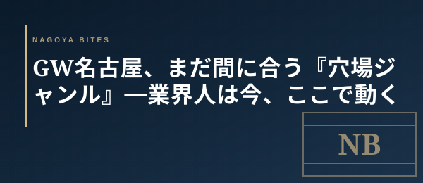

GW直前短信
GW名古屋、まだ間に合う『穴場ジャンル』— 業界人は今、ここで動く
GW突入まで残り2日。栄・丸の内の和食・割烹は予約完売だが、業界人はGW期間中、実は別ジャンルで動く。今夜から電話一本で席を押さえられる「狙い目ジャンル」を整理した。

この記事はNAGOYA BITES — 名古屋の厳選1,100店超を業界視点で紹介するグルメガイドの一部です。
1. 中華・鉄板焼き・焼肉 — キャパで勝つジャンル
GW中、和食割烹や寿司の予約は壊滅的だが、中華・鉄板焼き・焼肉は店舗キャパが大きく回転も早いため、当日17時台や21時台なら席が出やすい。栄・錦エリアの中華なら4人席が直前で取れる確率が高く、鉄板焼きは1〜2席のカウンターから動きやすい。価格帯はコース5,000〜8,000円が中心。アラカルトで注文を絞れば一人3,000円台でも十分に食事になる。
2. ホテルレストラン — キャンセルが集中する穴場
ヒルトン名古屋・マリオットアソシア・名古屋観光ホテルなどのホテルレストランは、GW中こそキャンセル待ちが効く。2泊3日で旅程が変わる宿泊客が多く、当日朝〜昼にかけて空きが急に出る。電話で「今日のディナー、空きが出たら回してほしい」と直接伝えれば、ブランドエリアで個室確保まで持っていける店もある。空間込みで考えれば、コスパは決して悪くない。
3. 立ち飲み・大衆酒場 — ウォークインで戦える
予約不要の立ち飲みや大衆酒場はGWこそ強い。栄・名駅・大須界隈の人気店でも、GW中は地元の常連客が帰省して逆に空きやすくなる。19時前に動けば、普段は並ぶ店もカウンター席にスッと入れることが多い。GWで観光客と地元客が入れ替わる時期は、立ち飲みのオペにとって意外な「凪」になる。
業界人の動き方 — 「予約困難」を諦めて「今日のキャンセル」を狙う
業界人がGW中に名古屋で食事をする時は、予約困難店を諦めて「今日キャンセルが出る店」を狙うのが基本だ。当日15時〜17時に予約サイトと電話を二段構えでチェックすると、GW中でも質の高い店に入れる確率が一気に上がる。GW期間はシステム非反映のキャンセルが積み重なる時期でもあり、電話一本で繰り上がる店が必ずある。完売表示に怯まず、まず動くこと。
Inside Perspective — 業界人の目利き
- 和食・寿司の予約完売はGW中の名古屋では当たり前。回転型ジャンル（中華・鉄板焼き・焼肉）に視点を切り替えると、当日でも席が出やすい
- ホテルレストランは宿泊客のキャンセルが当日朝〜昼に集中する。電話で『キャンセル待ち』を直接伝えるとブランド空間込みで確保できる
- 立ち飲み・大衆酒場はGW中、地元客の帰省で逆に空く。19時前に動けば普段並ぶ店にもスッと入れる